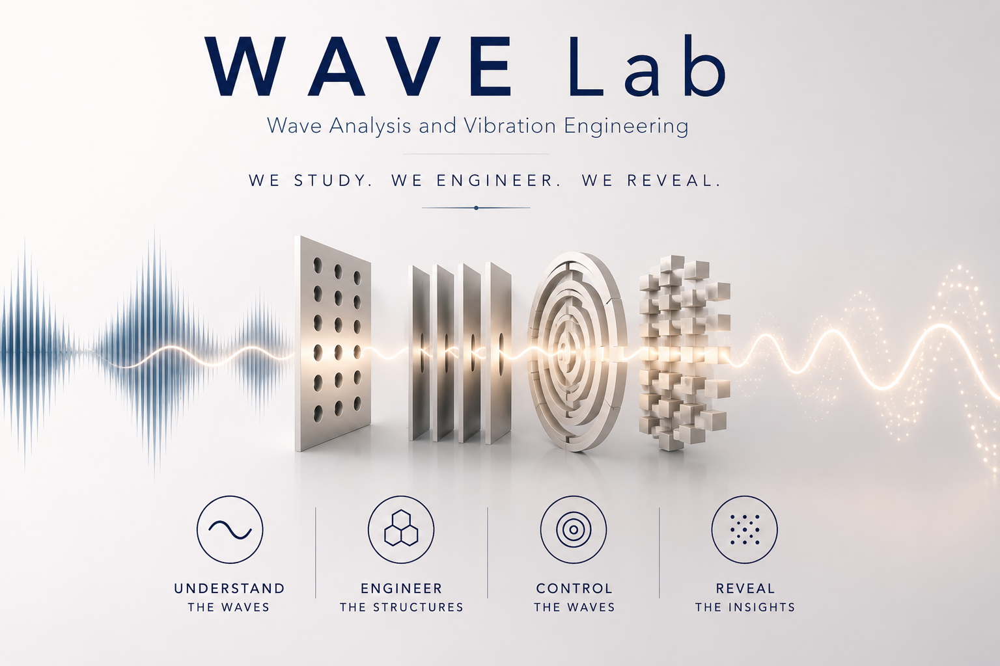

Wave Analysis and Vibration Engineering
WAVE Lab investigates the physics of wave propagation and vibration to develop innovative solutions for engineering challenges across acoustics, structural mechanics, and intelligent sensing. We engineer metamaterial structures that manipulate, sense, and decode acoustic signals — opening new frontiers in non-destructive testing, ultrasonic diagnostics, and wave-based intelligence.

How We Work
Conventional sensors receive whatever signals arrive. We engineer the the structures through which waves propagate — enabling the wave itself to be filtered, focused, redirected, or encoded before it reaches the sensor. By embedding functionality into physical structures, we seek to transform the way information is generated, captured, and interpreted across a wide range of engineering applications.